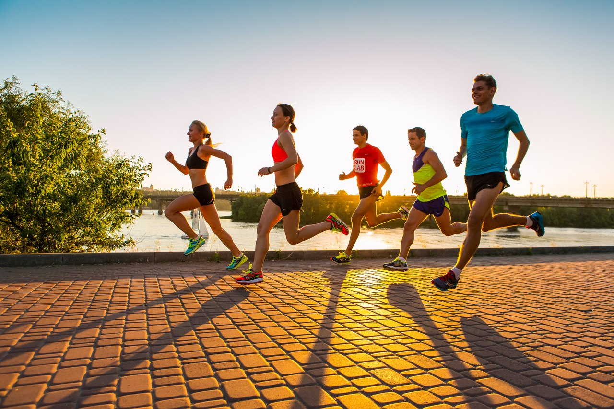
1. Что не относится к современным спортивно-оздоровительным системам физических упражнений по формированию культуры движения и телосложения?
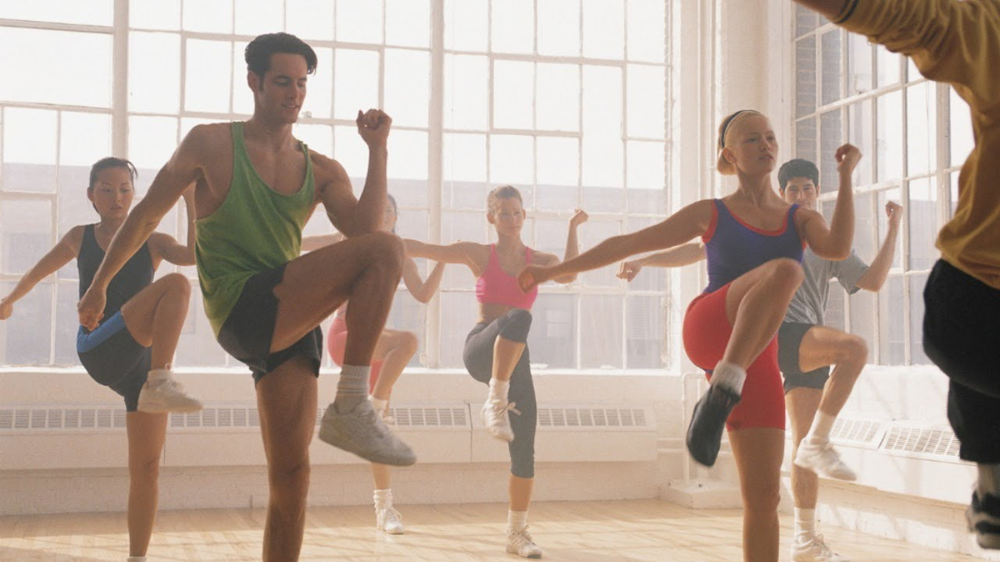
2. Что из перечисленного не является содержанием ритмической гимнастики?
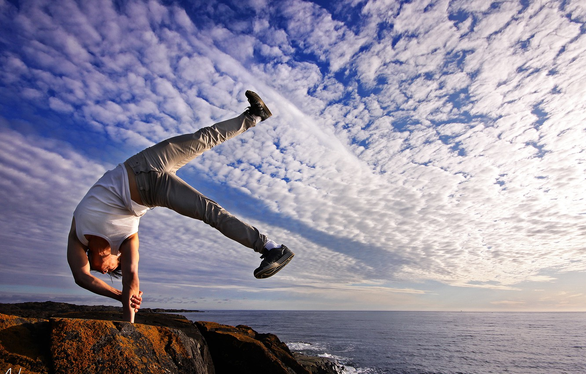
3. Ритмическая гимнастика способствует улучшению свободы движения. Так ли это?
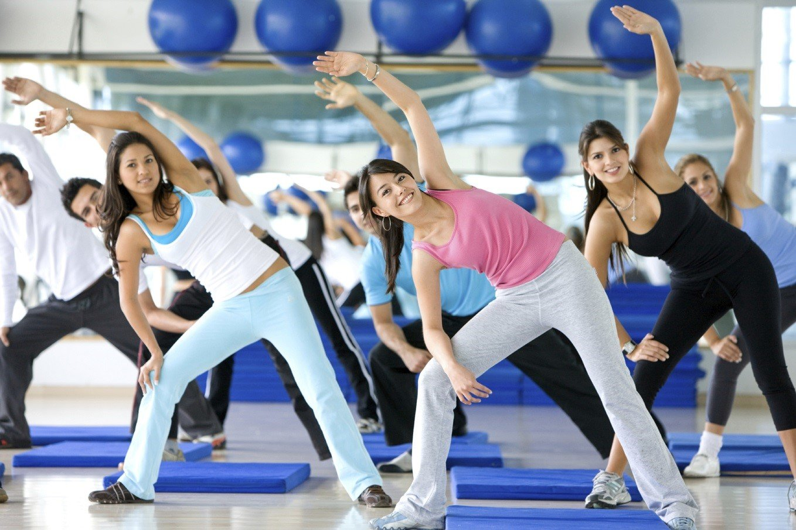
4. При какой частоте выполнения упражнений ритмической гимнастики вы сможете достичь наибольшего эффекта?
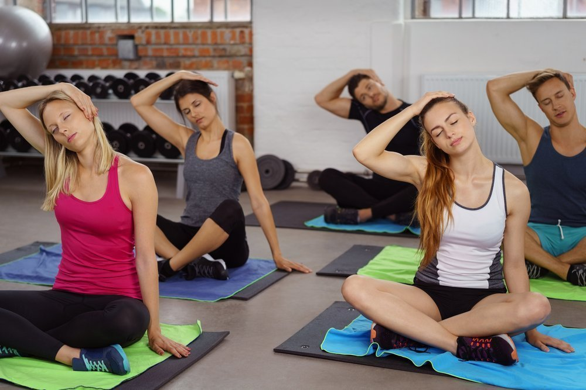
5. Шейпинг — это система физических упражнений (преимущественно силовых)…
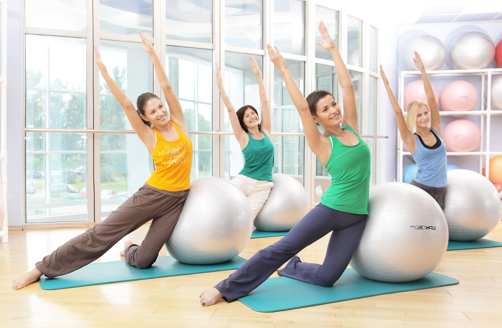
6. Шейпинг в первую очередь направлен на…
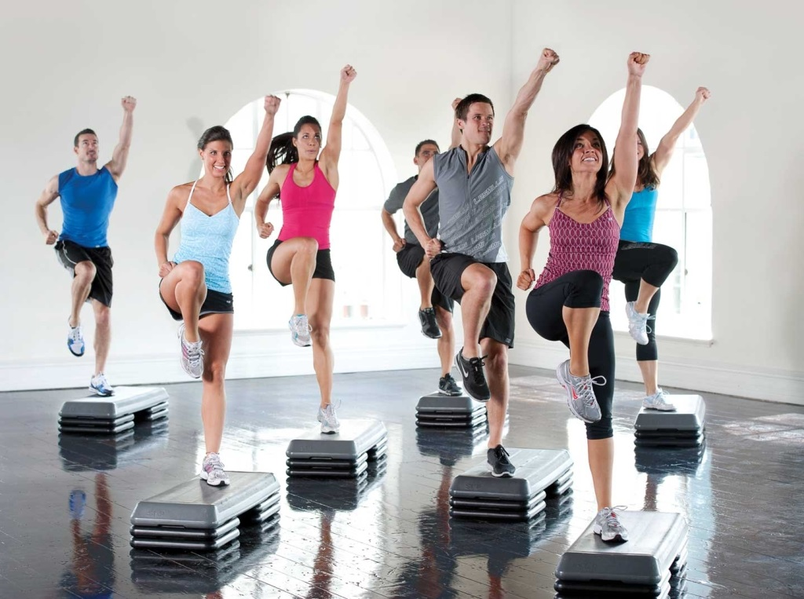
7. Степ-аэробика — это система физических упражнений с использованием
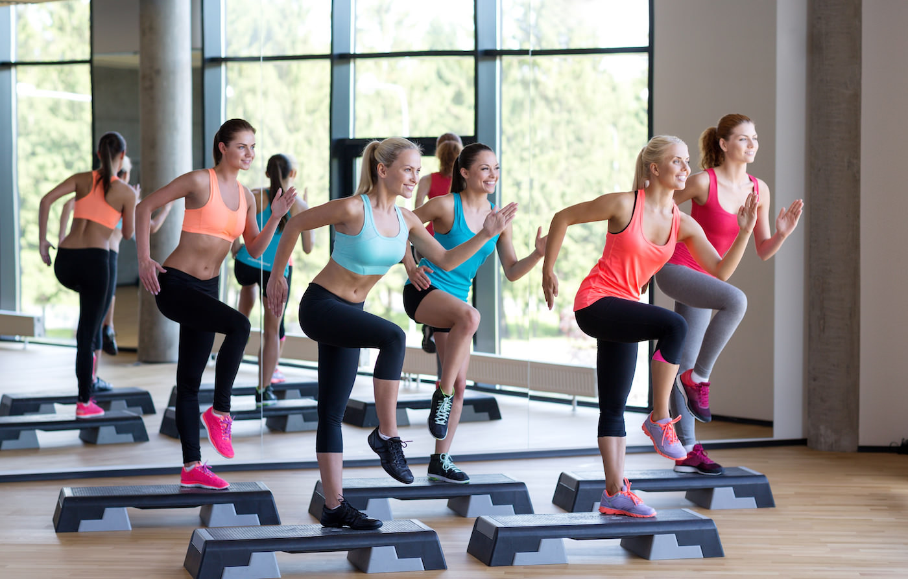
8. Занимаясь степ-аэробикой, вы можете получить нагрузку, равноценную беговой тренировке?
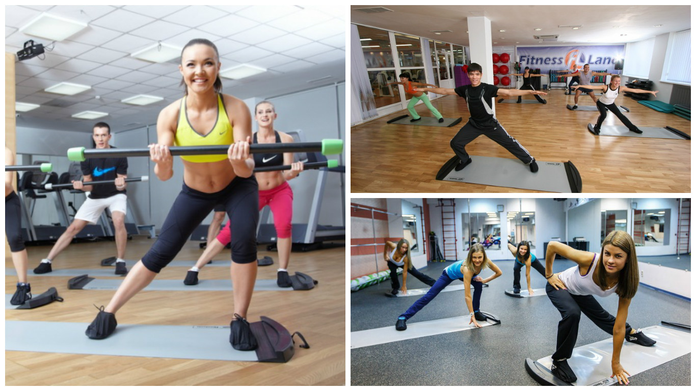
9. Занимаясь слайд-аэробикой, встают на дорожку (слайд) и делают упражнения, имитируя движения…
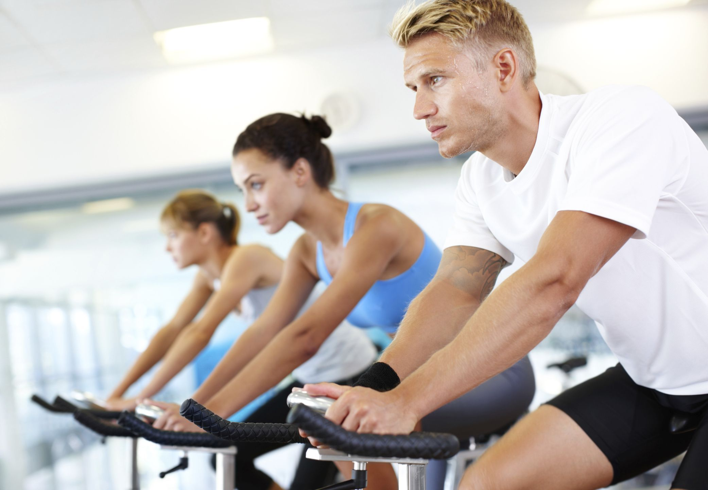
10. Велоаэробика — это…
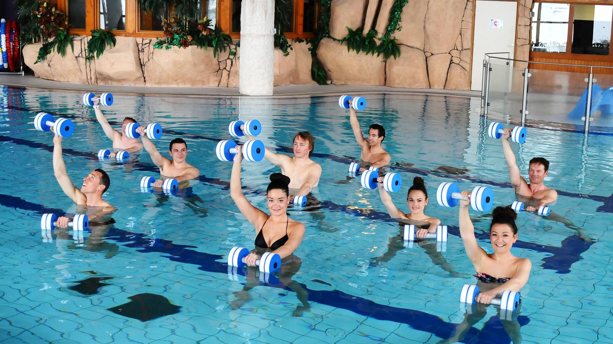
11. Аквааэробика — это система физических упражнений в воде, выполняемых под музыку, сочетающая элементы
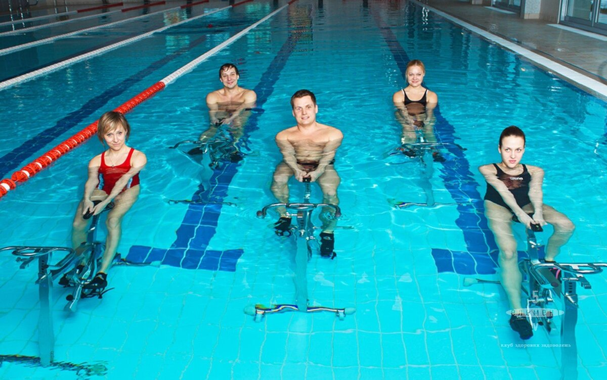
12. При занятиях аквааэробикой, выполняются такие упражнения, как ходьба, бег, прыжки и подскоки в разных направлениях, махи руками и ногами, танцевальные шаги и др. прямо в воде. Верно?
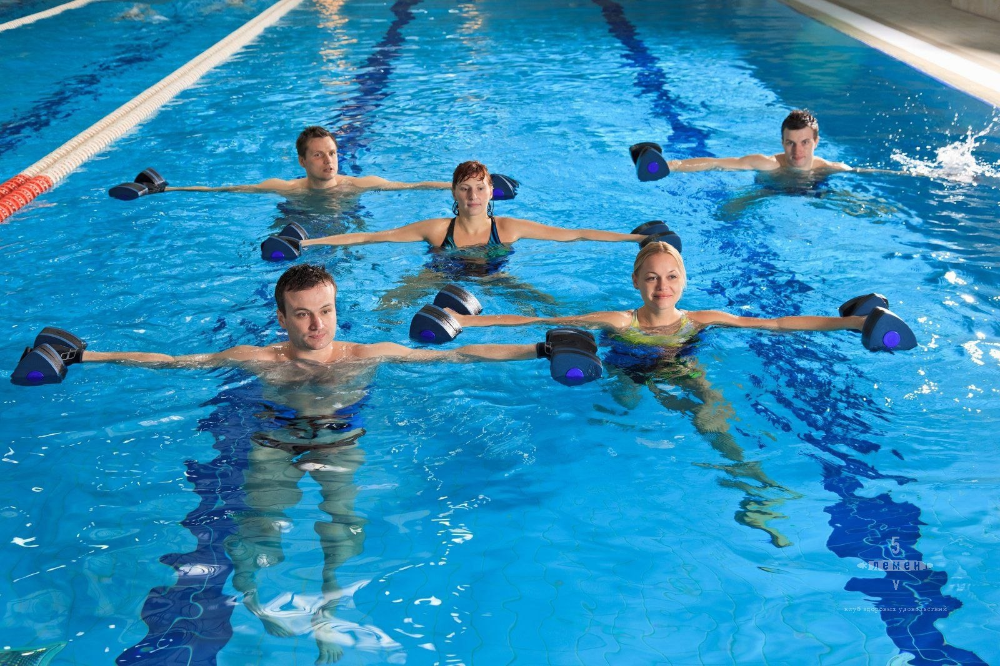
13. Аквааэробика улучшает деятельность сердечно-сосудистой и дыхательной систем, развивает физические качества, способствует коррекции телосложения, повышает уровень работоспособности; оказывает положительное влияние на психику человека. Утверждение верно?
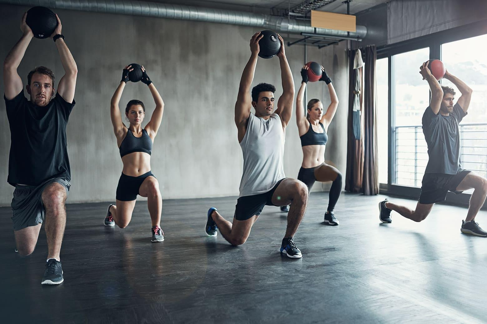
14. Внешний эффект силовых упражнений выражается в…
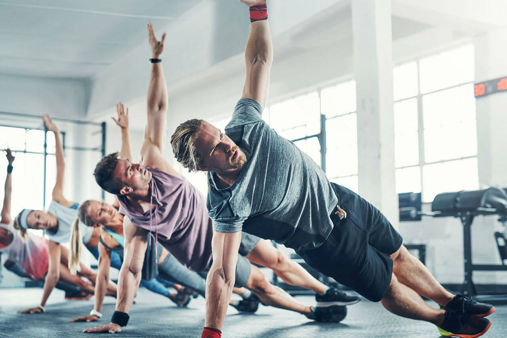